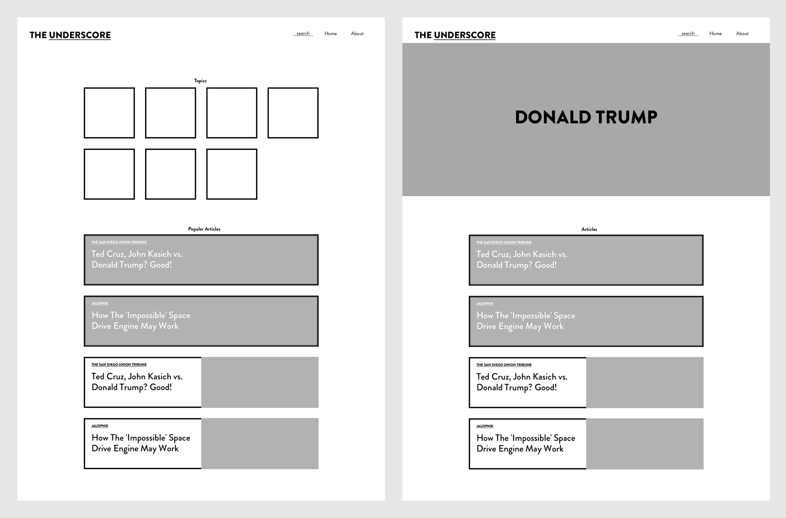
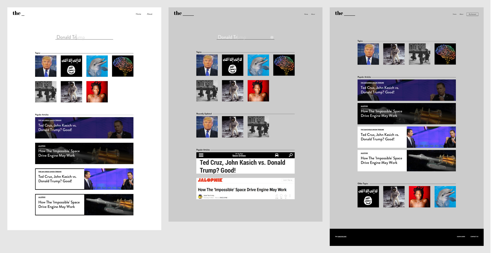
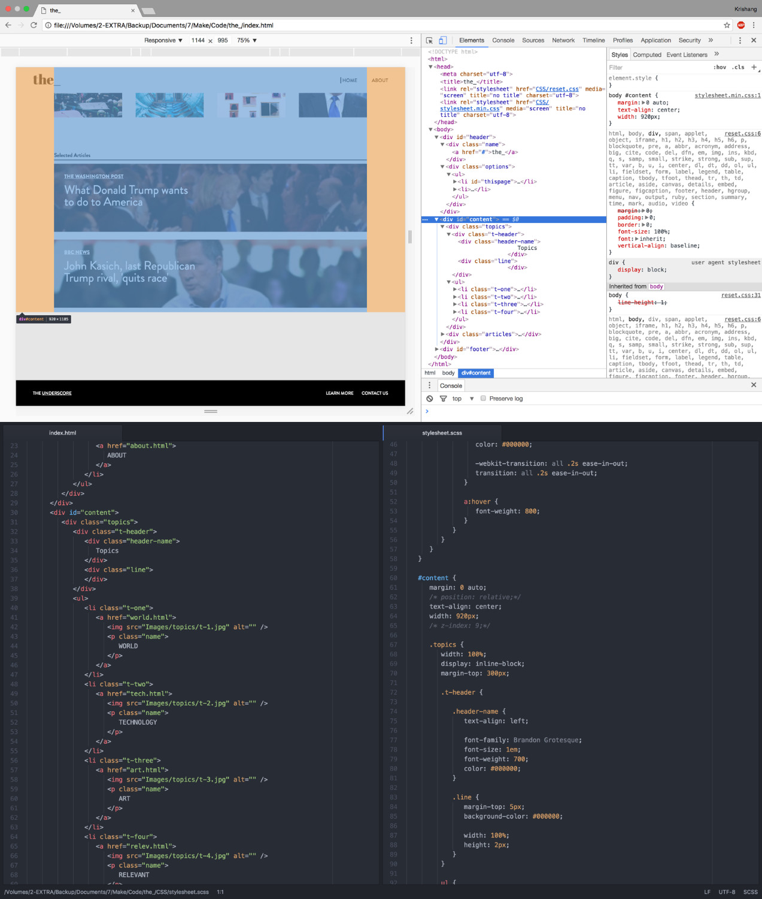
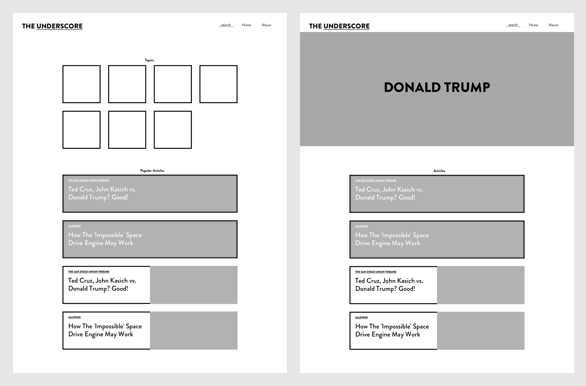
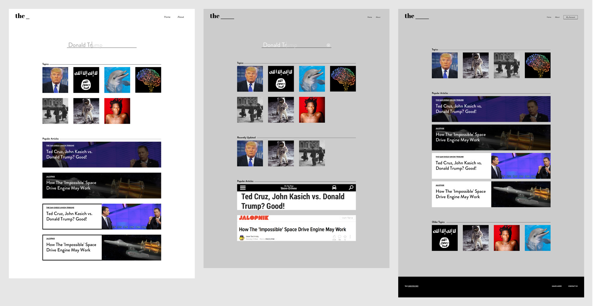
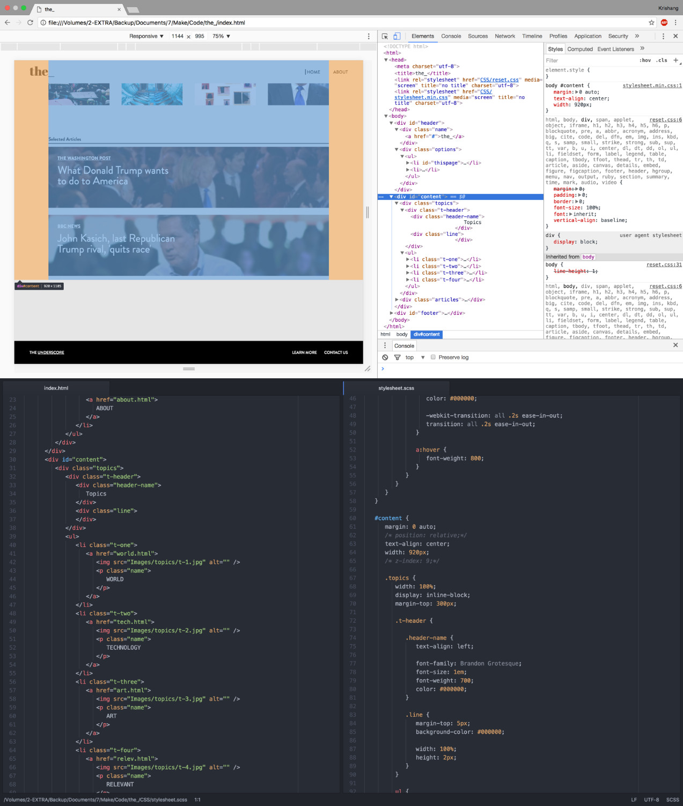

user experience
web development
The biggest problem with how we receive news today is that the content lies within our comfort zone. Platforms such as Facebook curate news towards a user based on the preferences of their circle of friends, location, browsing history, etc. This biased
way of curation generates more readers and clicks but often provides just one side of a multifaceted story.
To solve this, the Underscore provides a platform where the user may find a group of articles and videos that features varied perspectives on a topic.

 





I explored wireframing simple versions for the website and then slowly adding defined changes. I wanted to keep the design simple and keep the focus on the content.
The underscore would be a weekly updated news curator that features varied perspectives on a topic. This would, if interested, allow the reader to see multiple sides to a story.
With the website I had to consider interaction design functions such as mouse hover, mouse clicks and animations to make sure the usage of the website would be intuitive. I made the first prototype and the latest iteration
of the design using my knowledge of HTML, CSS and JavaScript/JQuery.